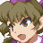
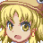

What overflowing power... Do you feel it, Minoriko?

Yes, autumn is surging!
Well, those two are the same as ever, but it's true we're bursting with power!

We'll put an end to everything in this battle!

A windy dream that strives for innovation... I will meet your challenge with my full might.

Whoever dominates this danmaku battle will become the guiding hand that banishes all doubt.
I understand your reasoning, but we can't let you have your way.

I can certainly relate to the misfortune and anxiety you carry.

But we've been doing just fine for ourselves without any grand guidance.
With hearts that love autumn!
And the tenacity of weeds!

And the power of friendship!
All of that comes together in harmony and acts as a foundation for our daily lives in Gensokyo.
That's right, none of us are alone!
So we'll never lose to anxiety!
People's dreams shouldn't hinge on such flimsy logic!

This is the summit, everyone! Show her our full power!

The union of human and youkai... The entirety of that concept will be our blade.
All forces, charge! Our target is Makura Muwatari, mastermind of this incident!